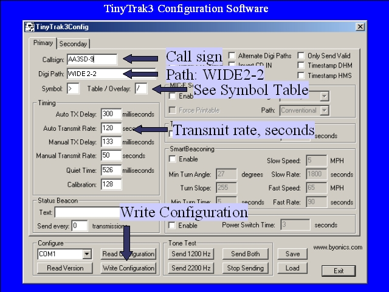

Notes:
The one weak link in the open source chain for APRS is configuration software for the TinyTrak PICs. The protocol for configuring TinyTrak chips has not been made publicay available (allthough there is a project underway to replace the TinyTrak with an open source firmware chip – the Opentrak project).
This is the TinyTrakIII configuration interface. It is distributed only as a windows executable. Connect a TinyTrakIII to the computer's serial port, press the read version button to test the connection, then enter the desired callsign, path, symbol, transmit rate, and other parameters, then press the writhe configuration button to write the configuration to the tracker's memory. Both an primary and a secondary program can be written, and the TinyTrakIII can switch between these. The default PocketTracker uses only the primary program, an additional jumper is needed to add the secondary program.
Note: Do not program a PocketTracker with a version of the TinyTraKIII configuration software that does not include a 300 baud option (which isn't present in this version), Other versions will set the PocketTracker to 300 baud instead of 1200 and make its transmissions uninteligible. When programming the PocketTracker, make sure that the 300 baud check box is not selected. See the TinyTrakIII documentation for additional details on programming and aligning the TinyTrak and the PocketTracker.